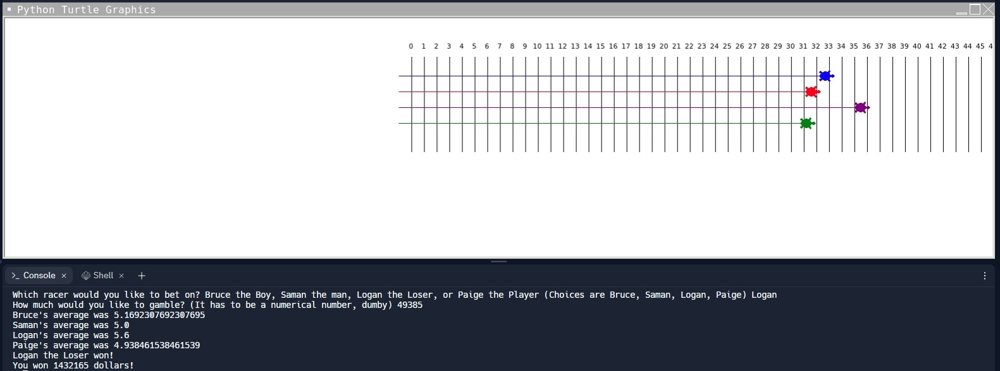
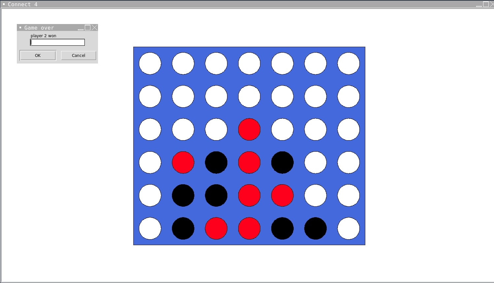
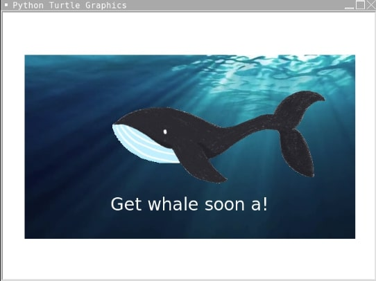
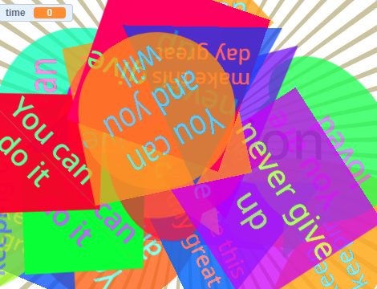
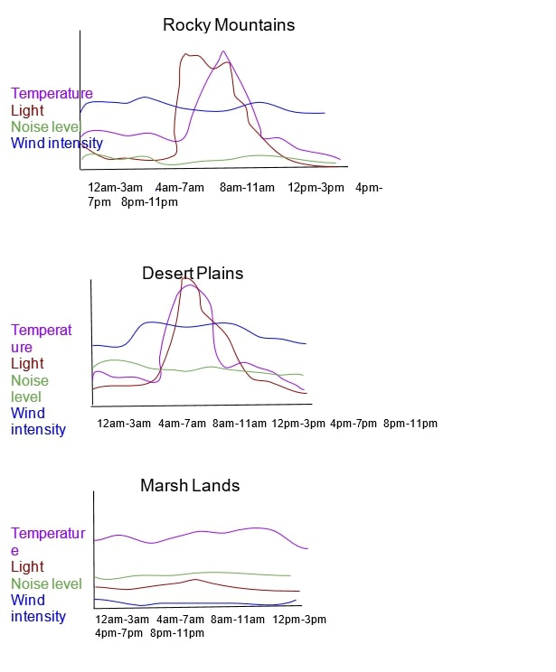
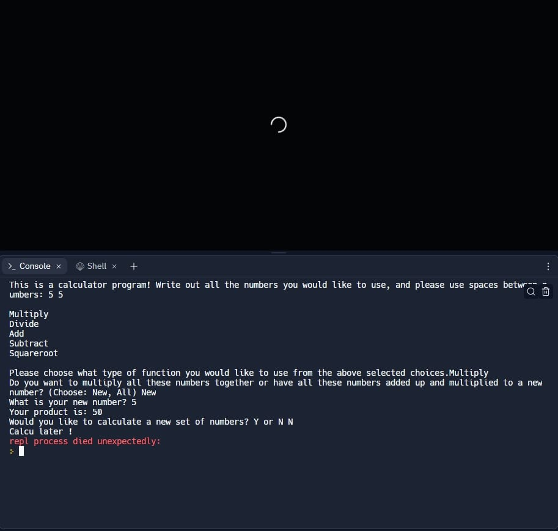
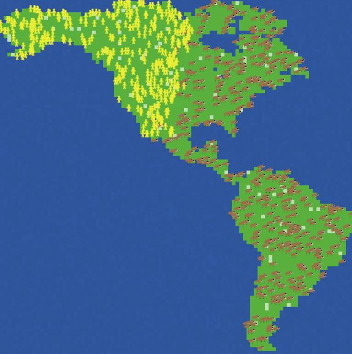

Home
Portfolio
About Me
This is my Portfolio Page!
Our Code asks the user what racer they want to bet on, and then they gamble the amount. The turtles then start racing, and whoever finishes first/has the highest speed wins. The user is then given the amount they gained or lost depending on who they bet on. https://replit.com/@dinoman16/Turtle-Kar-Racers-TKR?v=1

We made a connect 4 game, player versus player. One player would have to get 4 of the same color in a row to win.

Our game asked the user for the recipient's name and then said "get whale soon ___" with a whale moving above it.

Motivational shapes, when screen is clicked a shape appears with a random motivational quote in a random shape

Graphs, which show temperature, light level, noise level, and noise intensity of the Rocky Mountains, Desert Plains, and Marsh Plains in different times of the day.

Digital Portfolio: Calculator, which is able to calculate an infinite amount of numbers with 5 different options: add, subtract, multiply, divide, and square root.

Use data files to create graphs.
Using Netlogo, we ran a simulation that showed the effects of humans and climate change on extinction of mammoths.
